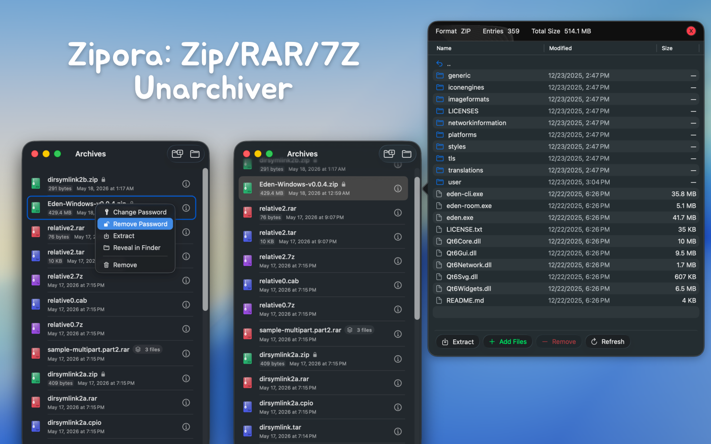
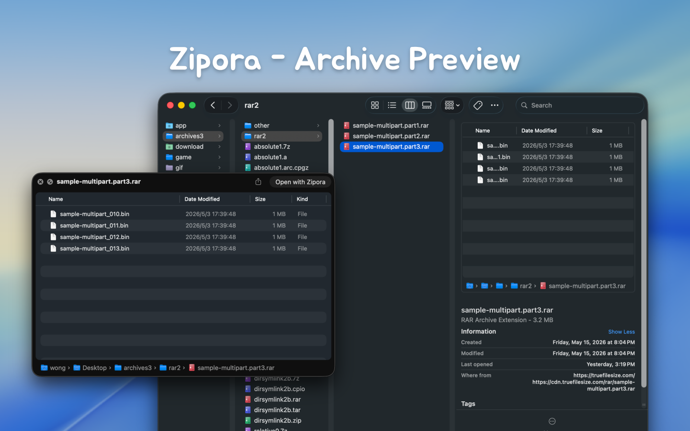
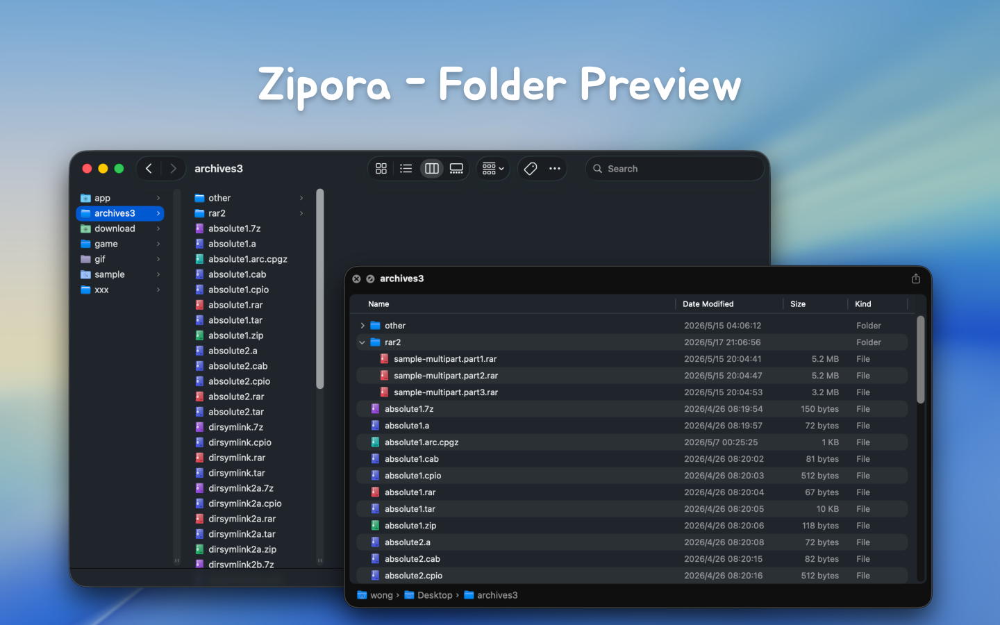

What Is Zipora
Zipora is a native macOS archive tool built with Swift / SwiftUI, designed for everyday desktop compression, extraction, preview, and archive organization.
It is not just an unzip utility. Zipora provides a complete archive workflow:
- Drag and drop files or folders to quickly create a new archive
- Open archives and preview tree structure, file sizes, and modified timestamps directly
- Extract to a selected directory and quickly locate results in Finder
- Keep a recent archive history for reopening, extracting, or continuing work
- Enter passwords during open or extract when a protected archive requires it
- Organize rebuildable archives by adding or removing files
- Add password protection to existing ZIP archives
Features
- Native macOS app built with Swift / SwiftUI
- Supports macOS 14 and later
- Home screen supports drag-and-drop for archive preview/extract, or dropping multiple files/folders to create archives
- Supports recent items, availability status, and encryption status recognition
- Supports archive content preview with current-folder search and hierarchical browsing
- Supports selecting extraction destination with progress display
- Supports entering passwords to continue opening or extracting protected archives
- Supports creating ZIP, 7Z, TAR, TAR.GZ, TAR.BZ2, and TAR.XZ
- Supports creating encrypted ZIP archives
- Supports archive editing for rebuildable formats: add files and remove files
- Supports adding password protection to existing ZIP archives
Create Archives
The current UI can directly create the following formats:
zip7ztartar.gz / tgztar.bz2 / tbz2 / tbztar.xz / txz
Notes:
- UI format labels are
ZIP, 7Z, TAR, TAR.GZ, TAR.BZ2, and TAR.XZ
tgz, tbz2, tbz, and txz are common alias extensions- Only
ZIP currently supports enabling password protection during archive creation
Zipora currently supports opening, previewing, or extracting the following common formats:
7zziptartgzgzbz2xzlzmazstlz4lzipcpioxarwarcrararadebpkgisocabjarapkipawhlmtreeshar
Actual support still depends on backend capabilities, plus archive structure, encryption method, and compatibility.
Current Implementation Notes
- Whether some encrypted archives can be read, previewed, or extracted still depends on underlying archive library support
- Password entry is currently supported during open / preview / extract flows for protected archives
- Creating encrypted ZIP archives is currently supported, and password protection can also be added to existing ZIP archives
- Archive editing is implemented as: extract to temporary workspace -> modify content -> rebuild and replace the original archive, rather than direct in-place archive structure editing
- Add / remove file actions are available only for formats that the app can currently rebuild
- By default, extraction creates a folder named after the archive file in your selected destination, then extracts contents into it